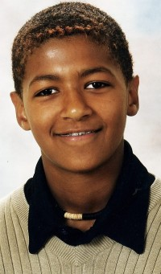

Eli Olsdatter Sommervold
K, #80601, f. 1776
Biografi
Eli Olsdatter Sommervold ble født i 1776 på/i Orkdal, Sør-Trøndelag. Hun giftet seg med
Ola Olsen Mæhlum den 11 juni 1804 på/i Orkdal kirke, Orkdal, Sør-Trøndelag.
| Sist redigert |
20 januar 2016 00:00:00 |
Brit Margot
K, #80603, f. 14 oktober 1933, d. 18 januar 2016
Biografi
Brit Margot ble født den 14 oktober 1933. Hun døde den 18 januar 2016 på/i Namsskogan, Nord-Trøndelag. Hun ble gravlagt den 28 januar 2016 på/i Trones kirkegård, Namsskogan, Nord-Trøndelag.
Brit Margot was also known as Brit Margot Johansen.
| Sist redigert |
6 mai 2026 23:43:47 |
Olaus Johansen
M, #80606, f. 1855
Biografi
| Sist redigert |
24 januar 2016 00:00:00 |
Elen Halvorsdatter
K, #80607, f. 1865
Biografi
Elen Halvorsdatter ble født i 1865. Hun giftet seg med
Olaus Johansen.
Elen Halvorsdatter was also known as Elen Johansen. Hun bodde på/i Grinibraaten, Rælingen, Fet, Akershus.
| Sist redigert |
24 januar 2016 00:00:00 |
Elsa Marie Wannebo
K, #80608, f. 11 februar 1948, d. 15 november 2017
Foreldre
Biografi
Elsa Marie Wannebo ble født den 11 februar 1948 på/i Nærøy, Nord-Trøndelag. Hun giftet seg med Harald Westgård. Hun døde den 15 november 2017. Hun ble gravlagt den 24 november 2017 på/i Salsbruket kirkegård, Nærøy, Nord-Trøndelag.
Elsa Marie Wannebo was also known as Elsa Marie Westgård.
| Sist redigert |
23 august 2018 00:00:00 |
Rigmor Helene Ness
K, #80609, f. 6 august 1937, d. 16 mai 2024
Familie: Odd Arnesen Fiskum (f. 11 august 1933, d. 27 januar 2016)
| Datter | Vigdis Fiskum |
| Sønn | Arne Håkon Fiskum |
| Datter | Ruth Kristin Fiskum |
Biografi
Rigmor Helene Ness ble født den 6 august 1937. Hun giftet seg med
Odd Arnesen Fiskum. Hun døde den 16 mai 2024 på/i Namsos, Trøndelag.
Rigmor Helene Ness was also known as Rigmor Helene Fiskum. Hun kjøpte den 17 desember 2007 Verftsgata 46 (Gnr 65; bnr 616; seksjon 20), Namsos, Nord-Trøndelag, for 1.800.000 kroner. Hun ble bisatt den 30 mai 2024 Namsos kirke, Namsos, Trøndelag.
| Sist redigert |
24 mai 2024 12:12:10 |
Philip Brøndbo Selnes
M, #80622, f. 1 november 1988, d. 26 mars 2006
Foreldre
| Mor | Astrid Margrete Brøndbo |

Philip Brøndbo Selnes
Biografi
Philip Brøndbo Selnes ble født den 1 november 1988. Han døde den 26 mars 2006 på/i Overhalla, Nord-Trøndelag. Philip frøs i hjel etter å ha falt ned en skrent på 7-8 meter.
Faren var fra Gambia.
| Sist redigert |
23 juli 2022 00:31:30 |
| Slektskap | 6-menning 1 gang forskjøvet til Håkon Wahl |
{kind=link}